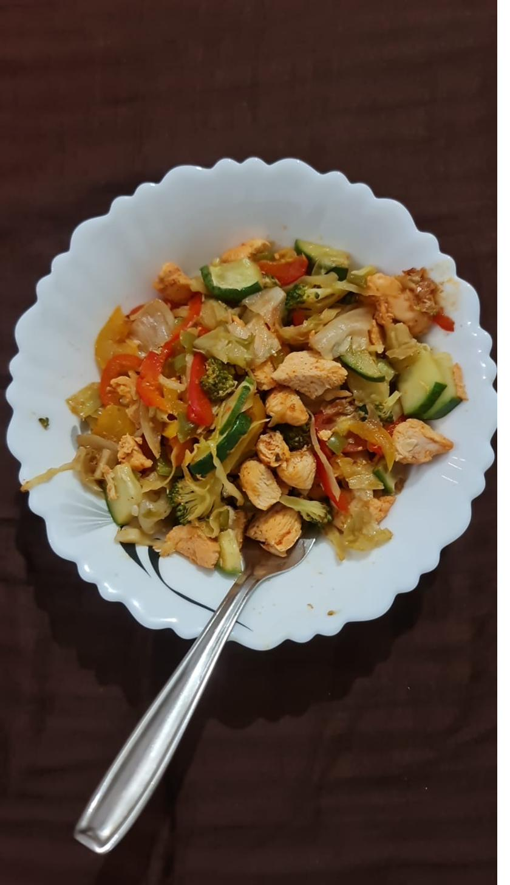
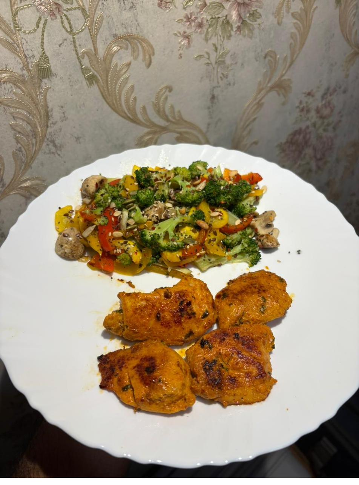

Recipes¶
Every recipe is scaled for a family of 4, kept short, and tagged with a verified video (🎥), storage note (🧊), and a tip (💡). Pick one protein anchor, then add a cooked veg, a salad, dairy, and nuts/seeds.
Protein anchors¶
Moong sprouts usal¶
Ingredients (4): 3 cups moong sprouts · 1 onion · 1 tomato · 1 tsp ginger-garlic · 1 green chilli · 1 tsp mustard + 1 tsp cumin · ½ tsp turmeric · 1 tsp chilli powder · curry leaves · 1 tbsp oil · salt · coriander.
- Heat oil, splutter mustard + cumin, add curry leaves, onion, ginger-garlic, chilli — sauté till golden.
- Add tomato + dry spices; cook till soft.
- Add sprouts + ½ cup water, cover, simmer 8–10 min (keep some crunch).
- Finish with coriander and a squeeze of lemon.
🎥 https://www.youtube.com/watch?v=u33FYQVfZ68 · 🧊 Fridge 3 days · 💡 Steam sprouts first for a softer texture.
Chana / chickpea masala¶
Ingredients (4): 3 cups boiled chickpeas · 2 onions · 2 tomatoes (pureed) · 1 tbsp ginger-garlic · turmeric, chilli, 1 tsp each coriander + cumin powder · 1 tsp garam masala · ½ tsp amchur · 2 tbsp oil · salt · coriander.
- Sauté onion till deep golden; add ginger-garlic, then tomato puree + spices; cook till oil separates.
- Add chickpeas + 1 cup water; simmer 10–15 min; mash a few to thicken.
- Finish with garam masala, amchur, coriander.
🎥 Step-by-step (with video): https://www.indianhealthyrecipes.com/chana-masala/ · 🧊 Fridge 4–5 days / freeze 1 month
Highest-leverage prep
Make a double batch of the onion-tomato masala base and freeze it — it becomes the base for chana, paneer, or egg dishes in minutes.
Grilled paneer on tawa¶
Ingredients (4): 500 g paneer · ½ cup thick curd · 1 tsp chilli · ½ tsp turmeric · ½ tsp garam masala · ½ tsp chaat masala · ½ tsp kasuri methi · 2 tsp roasted besan · 1 tbsp lemon · 1 tsp ginger-garlic · 1 tsp oil.
- Whisk the marinade; coat paneer; rest 30 min (no longer — acid makes paneer rubbery).
- Sear on a medium-high tawa, lightly oiled, 3–4 min/side until charred. Don't move it constantly.
🎥 https://www.youtube.com/watch?v=BwIJHI4KdIE · 🧊 Cook fresh for best texture · 💡 Sear marinated capsicum & onion alongside.
Paneer bhurji¶
Ingredients (4): 500 g paneer (crumbled) · 2 onions · 2 tomatoes · 1 capsicum · 1 green chilli · 1 tsp ginger-garlic · turmeric, chilli, ½ tsp garam masala · 1 tbsp oil · coriander.
Sauté onion → ginger-garlic → capsicum → tomato + spices till soft → add crumbled paneer, toss 3–4 min → coriander. 🧊 Fridge 2 days · 💡 Same recipe with eggs = egg bhurji.
Egg dishes¶
- Boiled eggs: cover with water, boil 8–9 min, ice-bath, peel. 🧊 In shell, fridge 5–7 days.
- Vegetable omelette: beat 8 eggs (for 4) + chopped onion, tomato, capsicum, spinach, chilli, salt, turmeric; cook on ½ tsp ghee, flip once.
- Egg bhurji: use the masala base, pour beaten eggs at the end, scramble on medium-low (high heat = rubbery).
🎥 Egg bhurji: https://www.youtube.com/watch?v=1OdPf65aPJg · 💡 Pull eggs off heat while slightly underdone.
Chicken tikka on tawa¶
Ingredients (4): 800 g–1 kg boneless chicken · ¾ cup hung curd · 1.5 tbsp ginger-garlic · 2 tbsp lemon · 1.5 tsp Kashmiri chilli · ½ tsp turmeric · 1 tsp garam masala · 1 tsp chaat masala · 1 tsp kasuri methi · 2 tbsp roasted besan · 1 tbsp oil · salt.
- First marinade: chicken + lemon + ginger-garlic + salt, 30 min.
- Second marinade: add hung curd + spices + besan + oil; rest 1 hr → ideally overnight.
- Sear on a hot tawa/cast-iron, single layer, 4–5 min/side until charred and cooked through (no pink, ~75 °C internal). Work in batches.
🎥 https://www.youtube.com/watch?v=8L7V1eTaTnw · 🧊 Marinated raw: fridge 1–2 days or freeze in marinade 1 month; cooked: fridge 3 days.
Chicken–vegetable stir-fry¶
Ingredients (4): 700 g chicken (cubed) · broccoli, red/yellow capsicum, cabbage, onion, cucumber · 1 tbsp ginger-garlic · pepper · chilli flakes · 1 tbsp oil · salt.
Sear chicken first till golden, remove. Stir-fry hard veg on high 3–4 min, then quick-cooking veg; return chicken; toss with pepper, chilli flakes, salt.

💡 High heat + don't crowd the pan = sear, not steam.
The "binder"¶
Besan / moong cheela¶
Ingredients (4): 2 cups besan (or 1.5 cups soaked-&-ground moong dal) · finely chopped onion, tomato, capsicum, spinach/coriander, green chilli · ½ tsp ajwain · ¼ tsp turmeric · salt · water to a spreadable batter · ½ tsp oil per cheela.
Mix to a pourable batter, rest 10 min. On a hot tawa pour a ladle, spread thin, drizzle oil, flip when edges lift. Serve with green chutney.
🎥 https://www.youtube.com/watch?v=8qUJOvPkpl8 · 💡 Add 2–3 tbsp sattu or crumbled paneer to push protein higher.
Daily sides¶
Sautéed mixed vegetables¶
Hot pan, garlic + onion 1 min → broccoli + capsicum 3–4 min → mushroom 2 min. Season; finish with 1 tbsp mixed seeds. Keep it crisp-tender.

Sautéed greens / bean sabzi¶
Garlic + spinach/methi wilted 2–3 min with salt & chilli; or beans/capsicum with mustard-cumin tempering, 6–8 min covered.
Green soup¶
Boil chopped lauki (or spinach/broccoli) with onion + garlic till soft (10 min), blend, season with pepper & salt, finish with a spoon of curd/milk. 🧊 Fridge 3 days / freeze.
Salads (no cooking)¶
- Kachumber: equal tomato + cucumber + onion, coriander, lemon, chaat masala. Dress just before eating.
- Curd vegetable salad / raita: fold the above into whisked curd + roasted cumin.
- Big leafy salad: lettuce + cabbage + spinach + broccoli + bell pepper + cherry tomato, topped with seeds + nuts, lemon + olive oil.
💡 Store washed-and-dried greens with a paper towel in an airtight box; moisture is what makes salad slimy.
Condiments¶
- Hummus: blend boiled chickpeas + 2 tbsp tahini + 1 garlic + lemon + 2 tbsp olive oil + salt + cumin + a little water. 🧊 Fridge 4–5 days.
- Green chutney: blend coriander + mint + green chilli + ginger + lemon + salt. 🧊 Fridge 3–4 days or freeze in cubes.
- Buttermilk (chaas): whisk ½ cup curd + 1.5 cups water + roasted cumin + salt + coriander.
- Toasted nuts & seeds: dry-toast a big batch, cool, jar it; portion ~25 g/person.
Weekly batch-cooking plan¶
The system works because most components are prepped once and assembled daily.
=== "Fri/Sat" Start sprouting: soak moong & chana overnight → drain → tie in muslin → sprout 1–2 days.
=== "Sunday (~90 min)" | Task | Yields / keeps | |------------------------------------|----------------------------------------| | Boil a big batch of chickpeas/chana| Fridge 4–5 days / freeze | | Cook the onion-tomato masala base | Fridge 5 days / freeze — base for many dishes | | Boil 6–8 eggs | In shell, fridge 5–7 days | | Marinate chicken, freeze in marinade | Freezer 1 month (thaw overnight) | | Make green soup base | Fridge 3 days / freeze | | Make hummus + green chutney | Fridge 4–5 days (chutney freezes) | | Toast a jar of nuts & seeds | Weeks | | Wash/dry greens, pre-cut hardy veg | Airtight, 2–3 days |
=== "Every day (10–15 min)" - Cook one fresh item: cheela / omelette / bhurji / sear paneer or chicken. - Reheat one batch item (chana / soup / sprouts usal). - Chop a fresh salad, spoon curd, add pre-portioned nuts & seeds. Plate.
Storage cheat-sheet¶
| Item | Fridge | Freezer |
|---|---|---|
| Boiled chana/legumes | 4–5 days | 1 month |
| Masala base | 5 days | 1 month |
| Boiled eggs (shell) | 5–7 days | — |
| Marinated chicken | 1–2 days | 1 month |
| Cooked curries | 3–4 days | 1 month |
| Soup | 3 days | 1 month |
| Hummus | 4–5 days | — |
| Green chutney | 3–4 days | 1 month |
| Sprouts (raw) | 2–3 days | — |
| Cut hardy veg | 2–3 days | — |
Cook fresh, don't store: omelette/cheela, leafy salads, seared paneer.
Cross-cutting tips
- One base, many meals — the onion-tomato masala is your highest-leverage prep.
- Hung curd marinades make paneer/chicken sear instead of steam.
- High heat, uncrowded pan keeps veg crisp.
- Salt salads last — salt pulls out water.
- Pre-portion nuts/seeds (~25 g) so you don't overshoot calories.